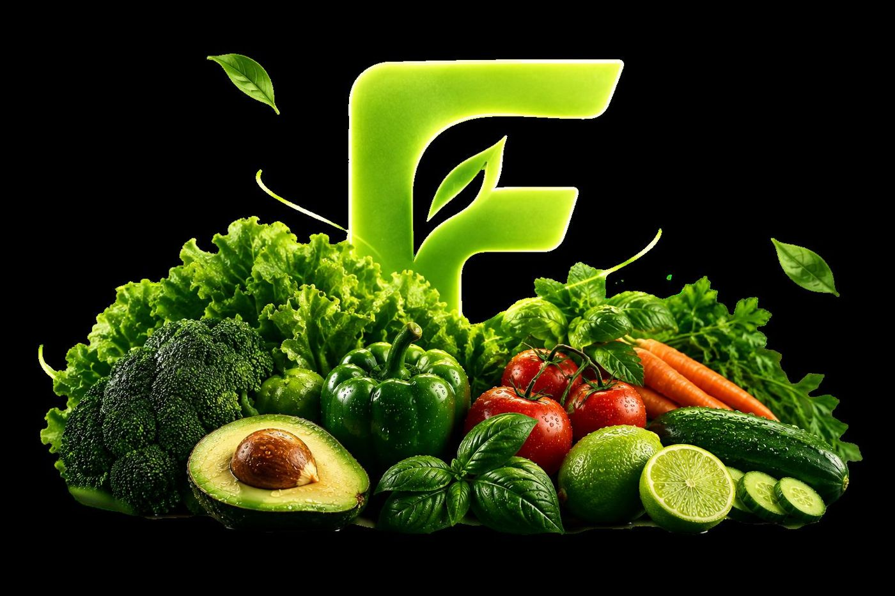
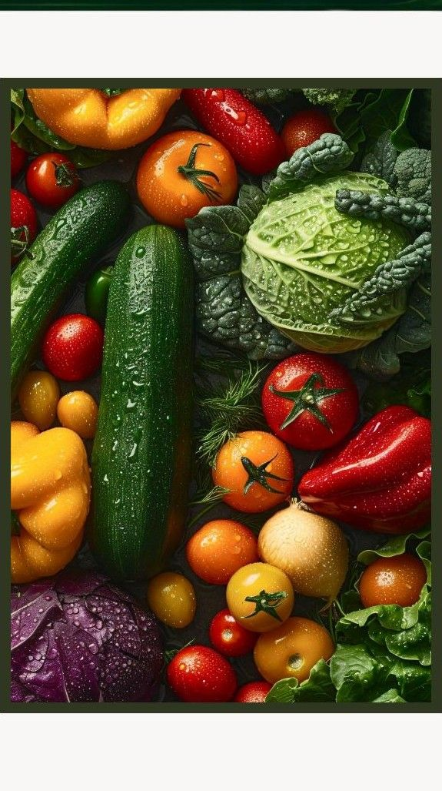
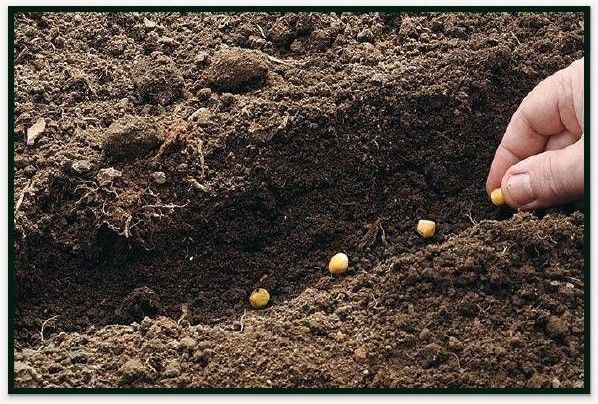
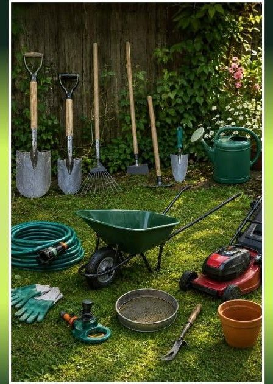
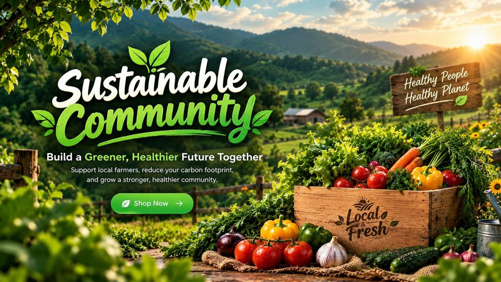
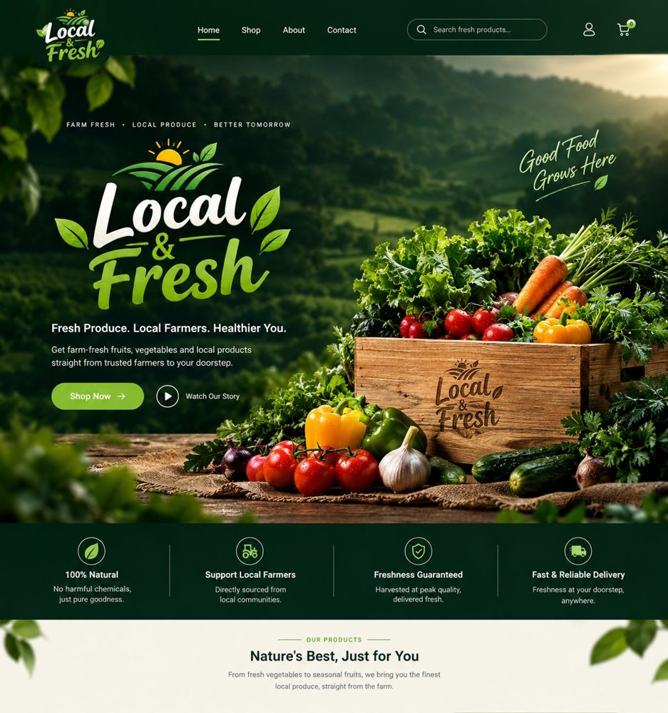
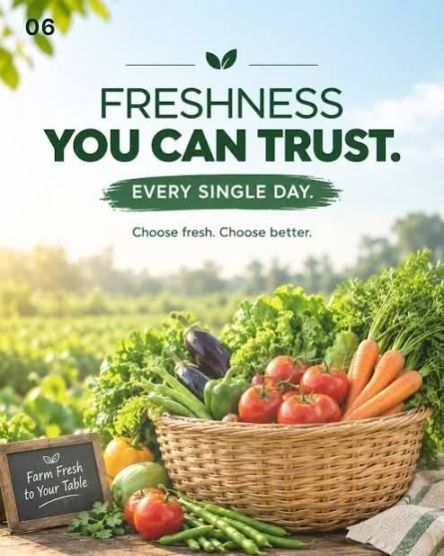

Fresh Choices
Better Life
Premium fruits, farm-fresh vegetables and wholesome dry fruits from Karachi's most trusted markets — compare prices, discover what's in season and shop with confidence.

- 100% NaturalFresh & organic products
- Fast DeliveryAt your doorstep
- Secure Payment100% secure payment
- Best QualityPremium quality products
Fresh Fruits & Vegetables, Straight from Nature
Freshness You Can Taste, Quality You Can Trust
Discover a colorful selection of premium fruits and farm-fresh vegetables at FreshFind. Whether you're looking for sweet seasonal fruits or fresh, crunchy vegetables, we provide naturally grown produce full of flavor and essential nutrients. Shop with confidence and enjoy healthier choices for you and your family — fresh from nature to your table.

Premium Dry Fruits, Naturally Nutritious
Discover the Goodness of Dry Fruits
Explore the rich taste, natural goodness, and nutritional value of quality dry fruits with FreshFind. From almonds and walnuts to dates, raisins, and other wholesome favorites, discover nutritious foods that add flavor and variety to your everyday diet. Learn about different types of dry fruits, their availability, and their nutritional benefits.


Our Markets
Our partner brands at Karachi's top-rated markets. Tap the eye icon for a quick look.
Explore More MarketsWhy We Choose Fresh Find?

Sustainable Community
We spotlight local growers and neighbourhood mandis, helping you support a greener, healthier food system with every visit.
Learn More
Local & Fresh
Live prices from ten Karachi markets let you compare and buy the freshest produce closest to home — no guesswork.
Learn More
Freshness You Can Trust
Every guide covers season, nutrition and storage, so what you bring home stays fresh, flavourful and good for you.
Learn MoreYour Fresh Market, Just a Click Away. Explore Quality Products, Compare Choices, and Order with Ease.
Explore NowFresh FindFRESH · LOCAL · NATURAL